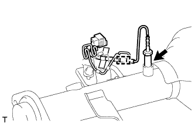

ДАТЧИК ТЕМПЕРАТУРЫ ОТРАБОТАВШИХ ГАЗОВ > СНЯТИЕ |
| 1. СНИМИТЕ ПРИЕМНУЮ ТРУБУ В СБОРЕ |
| 2. СНИМИТЕ ДАТЧИК ТЕМПЕРАТУРЫ ОТРАБОТАВШИХ ГАЗОВ |
 |
С помощью разрезной головки 14 мм снимите датчик температуры отработавших газов.
| 3. СНИМИТЕ ДАТЧИК ТЕМПЕРАТУРЫ ОТРАБОТАВШИХ ГАЗОВ № 2 |
 |
С помощью разрезной головки 14 мм снимите датчик температуры отработавших газов № 2.
| *A | для моделей с автоматической трансмиссией |
| *B | для моделей с механической трансмиссией |
| 4. СНИМИТЕ ДАТЧИК ТЕМПЕРАТУРЫ ОТРАБОТАВШИХ ГАЗОВ № 3 |
|  |
Открепите жгут проводов датчика.
С помощью разрезной головки 14 мм снимите датчик температуры отработавших газов № 3.